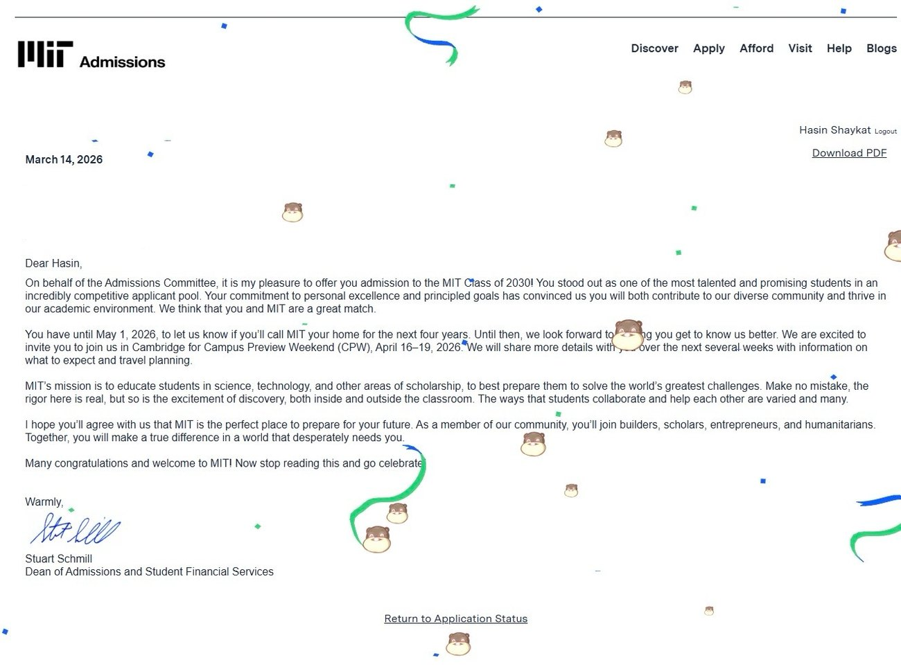
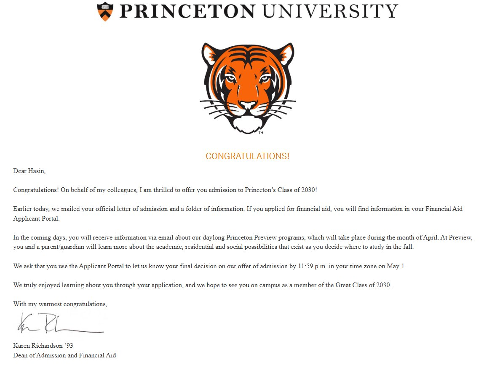
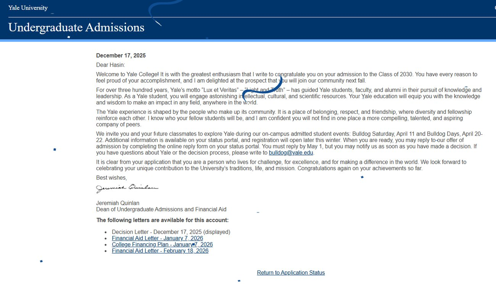
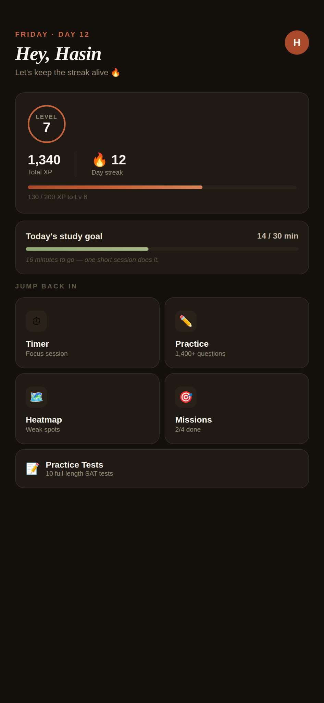
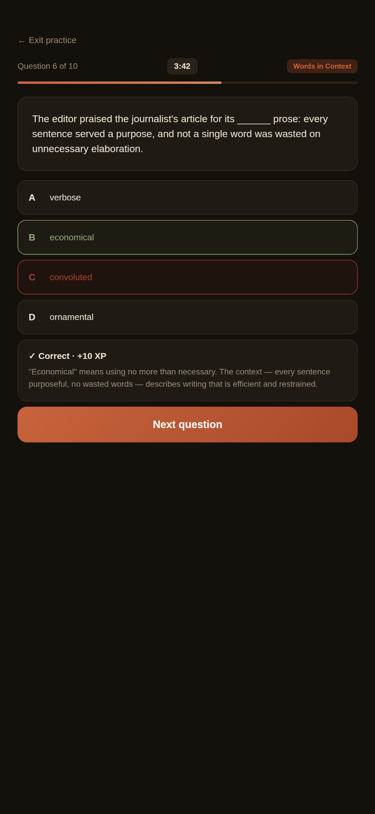
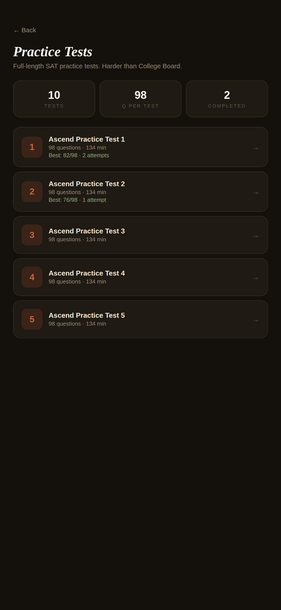

MIT Class of 2030
Official admissions portal screenshot.
Personalized SAT Prep & College Admissions Coaching
Give your student the guidance they need to earn higher SAT scores, build a stronger college application, and confidently navigate one of the most important milestones of their academic journey.
Admissions Proof
Ascend Prep is built around recent, real experience with selective admissions — paired with a structured SAT system and practical coaching for today's students.

Official admissions portal screenshot.

Official admissions letter screenshot.

Official admissions portal screenshot.
Shown as credibility proof only. Ascend Prep is not affiliated with MIT, Princeton, Yale, or the College Board, and admissions outcomes are never guaranteed.
Services
Start with the path your student needs most. Every program begins with a free roadmap call so we can understand goals, timeline, and fit.
Weekly 1-on-1 SAT tutoring with homework, practice test review, Ascend App access, and a custom score-improvement plan.
View SAT program →Personalized support for college list building, activities positioning, essays, supplements, interviews, and application planning.
View admissions program →Brainstorming, structure, revision, and polish for Common App essays and school-specific supplements.
View essay support →Powered by Ascend
The Ascend App is included for SAT coaching students. It turns tutoring into a complete learning system with practice, homework, analytics, and accountability.



The Ascend Method
Parents should never wonder what is happening between sessions. Ascend Prep gives every student a structured roadmap and a visible system for improvement.
We identify the student's goals, timeline, current challenges, and best next move.
The student gets a clear strategy for SAT prep, applications, essays, or all three.
Sessions focus on the highest-leverage skills, not random practice.
Progress is reviewed continuously so the strategy adapts as the student improves.
Meet the Founder
Hi, I'm Hasin Shaykat, founder of Ascend Prep. I scored a 1560 SAT, was admitted to MIT, Princeton, and Yale, and have mentored 100+ students through tutoring, academic support, and application guidance.
Having recently navigated one of the most competitive admissions cycles, I understand what today's students are up against: testing pressure, packed schedules, extracurricular choices, essays, and selective admissions uncertainty.
Student Trust
Ascend Prep is currently accepting its first cohort of paying families. Public testimonials will be added as students complete their first coaching cycles.
Personalized support from someone who has recently succeeded in the SAT and elite admissions process.
Current proof1560 SAT · MIT, Princeton, Yale admittedMore than a session: students receive structure, homework, practice, and progress tracking through the Ascend App.
Student systemAscend App included for SAT tutoringFounding students help shape the Ascend learning system while receiving close 1-on-1 coaching.
Founding cohortLimited spots availableFAQ
Clear answers before the consultation.
Ambitious high school students, especially rising sophomores, juniors, and seniors preparing for the SAT, college applications, essays, interviews, or selective admissions strategy.
Sessions are online through Zoom or Google Meet. Students receive assignments and practice work between sessions through the Ascend platform.
Yes. SAT coaching students receive complimentary access. During the beta period, the app can also be free for broader user feedback.
No specific SAT score or admissions outcome can be guaranteed. Ascend Prep provides personalized coaching, structure, feedback, and accountability to help students improve and present their strongest work.
We'll discuss the student's goals, current score or application stage, timeline, and recommended next steps. The goal is to leave with a clear plan, not a generic sales pitch.
Start here
Book a short consultation to discuss your student's goals and receive a clear plan for SAT prep, college strategy, or essay support.